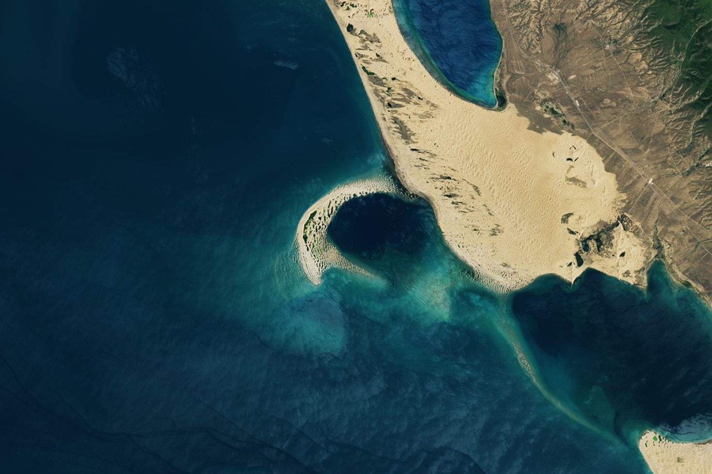
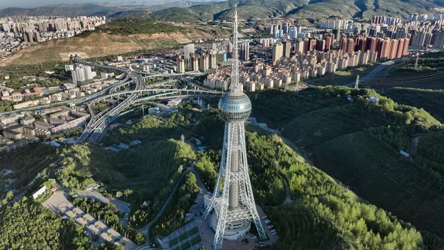
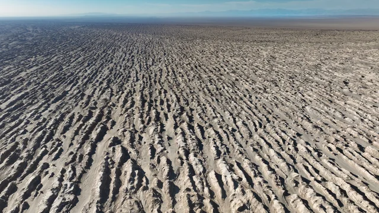
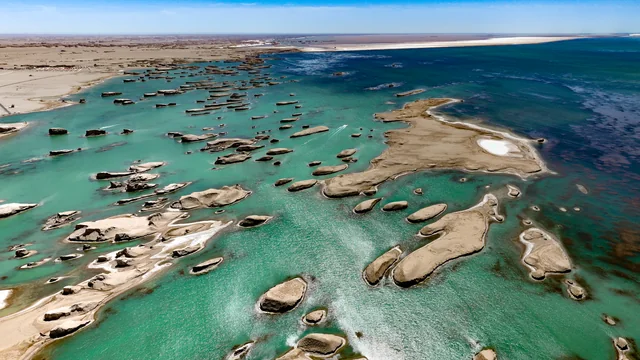
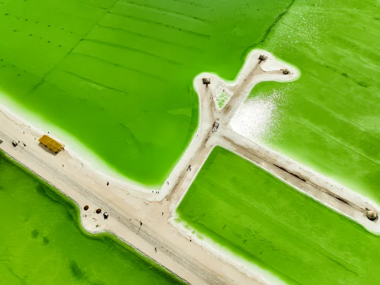
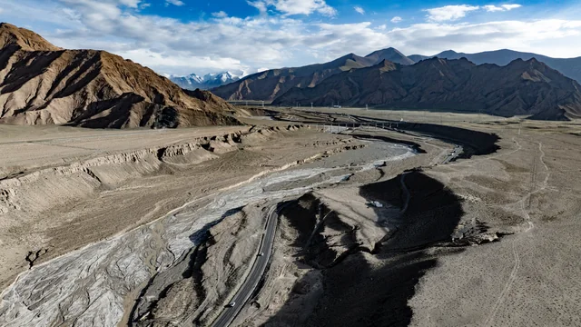
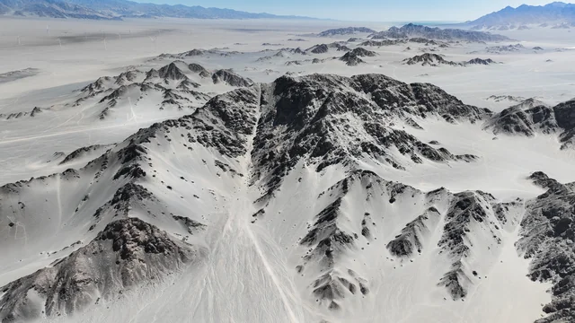
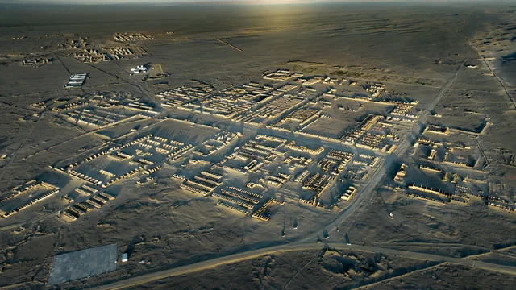
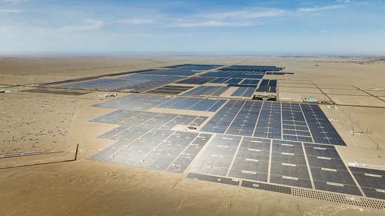
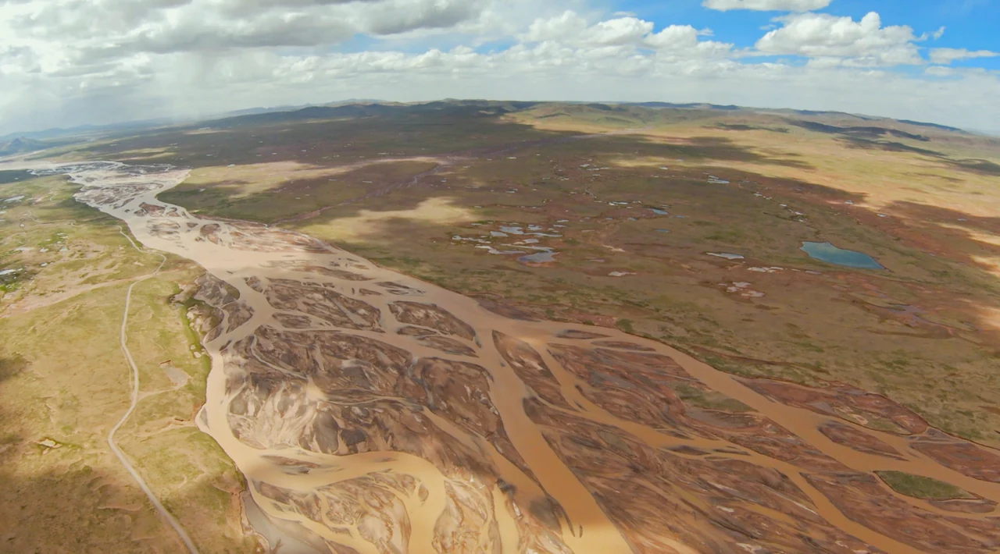

位置与地形Location & terrain
青海位于中国西部。昆仑山、祁连山、柴达木盆地和高原腹地构成多样的地形；不同区域的海拔和气候差异很大。Qinghai is in western China. The Kunlun and Qilian mountains, Qaidam Basin and plateau interior form varied terrain; elevation and climate differ substantially by area.
中国 · 青海省Qinghai · China
省会西宁，位于青藏高原东北部。Capital: Xining. Northeastern Tibetan Plateau.
青海位于中国西部。昆仑山、祁连山、柴达木盆地和高原腹地构成多样的地形；不同区域的海拔和气候差异很大。Qinghai is in western China. The Kunlun and Qilian mountains, Qaidam Basin and plateau interior form varied terrain; elevation and climate differ substantially by area.
长江、黄河与澜沧江的源区位于青海。青海湖位于省内东北部；柴达木盆地有察尔汗等盐湖。Qinghai contains headwaters of the Yangtze, Yellow and Lancang rivers. Qinghai Lake is in the northeast of the province; the Qaidam Basin contains salt lakes including Qarhan.
西宁是省会，格尔木是青藏交通的重要节点。青藏铁路和 G109 国道经过昆仑山口、沱沱河一带通往西藏。Xining is the provincial capital and Golmud a transport hub. The Qinghai–Tibet railway and G109 pass through the Kunlun Pass and Tuotuohe region toward Tibet.

中国最大的内陆咸水湖，位于青海省东北部。它是高原水文、候鸟迁徙和区域生态变化的重要地理对象。China’s largest inland saltwater lake, in northeastern Qinghai. It is a major geographic feature for plateau hydrology, migratory birds and regional ecological change.
进入视区后加载地球…Earth loads when it enters view…
位于青藏高原东北部。地球图标记青海省内的示意点，不是行政边界。太阳光照和晨昏线按当前 UTC 时间计算。On the northeastern Tibetan Plateau. A representative point marks Qinghai, not its administrative boundary. Sunlight and the terminator follow current UTC time.
可拖动旋转，也可暂停。西宁日出、日落在地球下方按北京时间显示。Drag to rotate or pause. Xining’s estimated sunrise and sunset are shown below the globe in Beijing time.
真实高程数据制作的可旋转地形。覆盖范围、垂直夸张比例和数据来源在视图中标出。Rotatable terrain from measured elevation data. Coverage, vertical exaggeration and sources are stated in the view.
地形正在加载…Loading terrain…
按拍摄地点整理。先加载小体积预览；每张照片都提供未经改动的原文件。Organized by location. Lightweight previews load first; every photograph has an unmodified original-file link.

青海Qinghai · 3 张images

青海Qinghai · 6 张images

青海Qinghai · 3 张images

青海Qinghai · 2 张images

青海Qinghai · 5 张images

青海Qinghai · 3 张images

青海Qinghai · 2 张images

拍摄记录Field photographs · 2 张images
以下是同次行程中的甘肃照片，不归为青海省内。The following Gansu photographs were taken on the same trip; they are not labeled as places in Qinghai.

我的探空系统试验地点。了解河流、气象站和现场记录。The test location for my sounding system. Read about the river, meteorological station and field records.